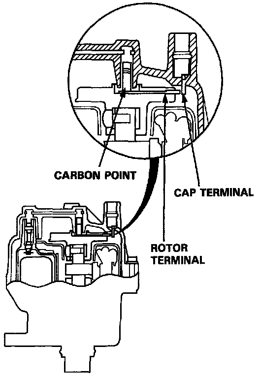

Operation CHARM
: Car repair manuals for everyone.
Home
>>
Acura
>>
1995
>>
Integra (RS, LS) L4-1834cc 1.8L DOHC PFI
>>
Repair and Diagnosis
>>
Powertrain Management
>>
Ignition System
>>
Distributor
>>
Ignition Rotor
>>
Description and Operation
Ignition Rotor: Description and Operation
Distributor Cap & Rotor:

The rotor makes the connection between the center terminal and the correct
spark plug
terminal of the cap as it is turned by the
distributor
.